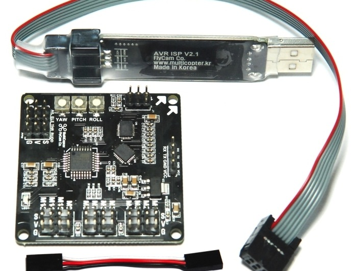
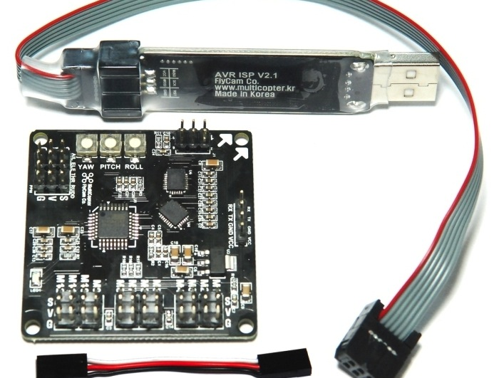
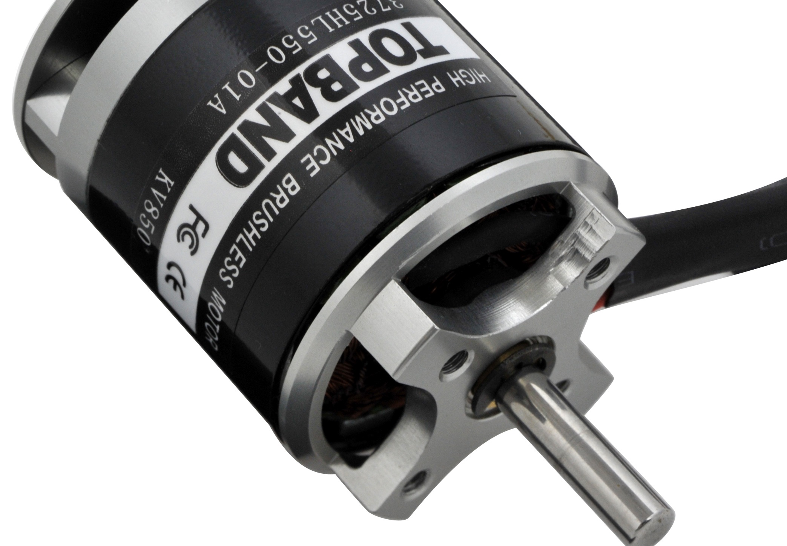
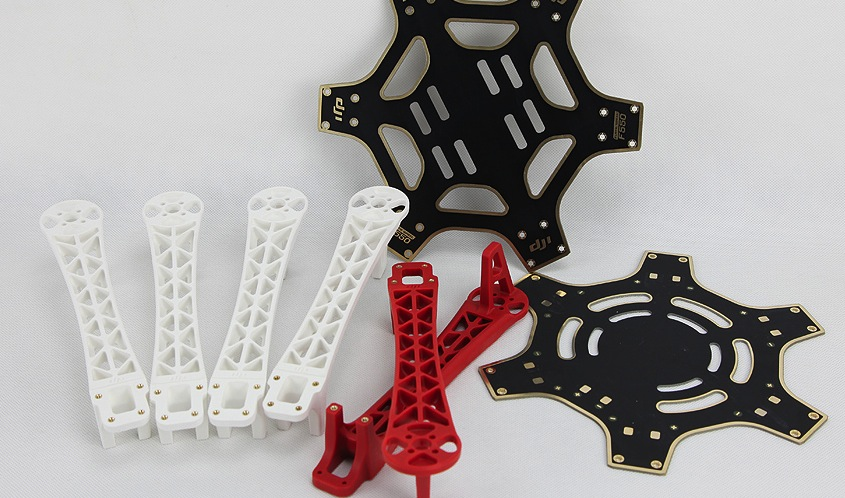
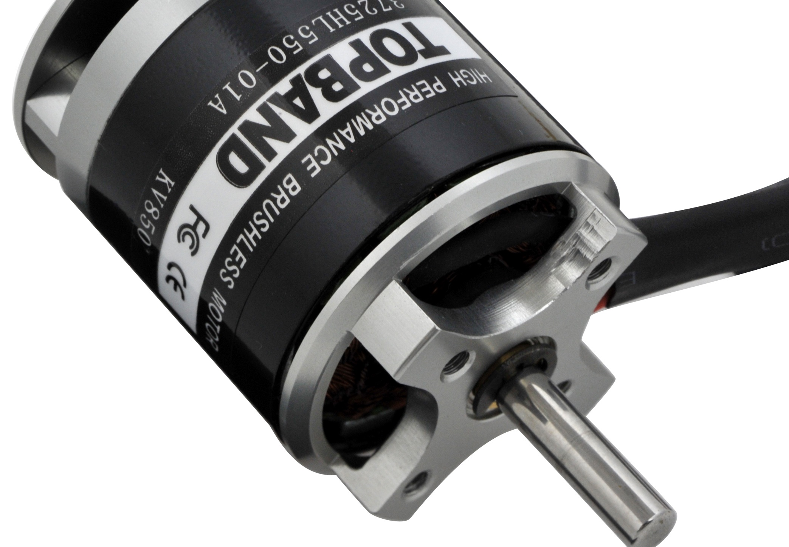
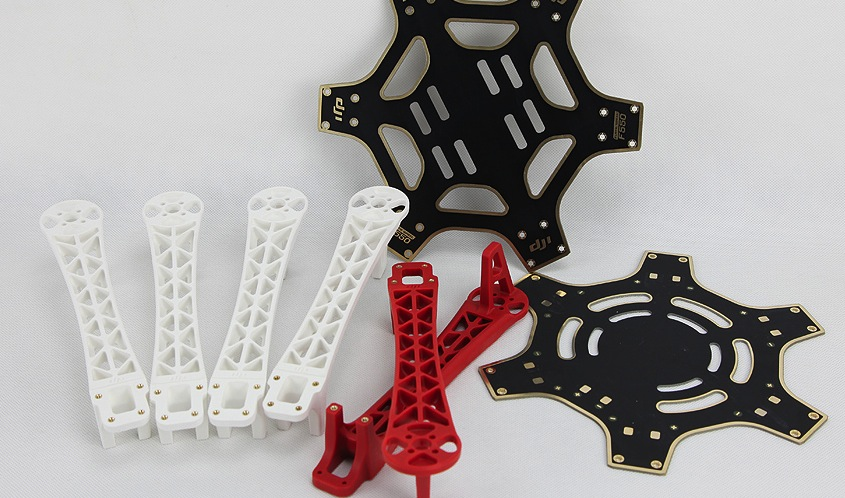

航模 & 航拍 for Skypedia
聂勇｜nieyong
陈晓｜Anyson
内容概述
飞行器基本原理
多轴飞行器（Multi-Rotor Copter）
航拍（Aerial Photography）
飞行器基本理论基础
- 伯努利原理
- 纳维－斯托克斯方程（Navier-Stokes equations，又叫做NS方程）
伯努利原理
等高流动时，流速大，压力就小。
题外话：上旋球／香蕉球
NS方程
NS方程是一组描述像液体和空气这样的流体物质的方程。这些方程建立了流体的粒子动量的改变率(加速度)和作用在液体内部的压力的变化和耗散粘滞力(类似于摩擦力)以及引力之间的关系。

处理厄尔尼诺全球性气象系统或机翼的升力等问题，NS方程的解必须借助计算机。这本身是一个科学领域，称为计算流体力学。


Boeing 767-300ER
直升机--单桨机
单桨机：主桨＋竖尾桨。竖尾桨用于抵消主桨的旋转扭力，以及机头的转向。
国产武直10（珠海航展／2012年11月）
直升机--双桨机
双桨机：上桨＋下桨＋平尾桨。平尾桨用于飞机的前进和后退。
二通／三通／三通半...
- 二通：只能上下飞
- 三通：上下，前后，左右砖头
- 三通半：大家称为伪四通，添加两个侧桨实现侧飞
- 四通：上下、前后、左右转头、左右侧飞
- ...
多轴飞行器的组成部分
- 主控模块
- 传感器数据采集（加速度／角速度／GPS等）
- 姿态控制算法
- 无刷电机/电调/电池/机架
- 遥控器组件
- 遥控器，国内性价比高的是天地飞
主控模块（1）
开源的，DIY强的主控模块
based on the Arduino open-source hardware platform
Crazyflie
open source nano quadcopter kit designed for flexible development and hacking by Bitcraze.

$173.0,First batch 300 kits,Second batch 500 kits,from seeed studio
主控模块（2）
商业公司开发的主控模块
 


题外话：固定翼／直升机
主控模块－技术核心
软件代码的核心
- 姿态控制算法
硬件模块的核型
- IMU（Inertial Measurement Unit）－惯性测量单元
- gyroscope - 三轴陀螺仪（姿态）
- 三轴加速度传感器（姿态）
- 气压计（高度）
- 磁场传感器（方向）
- GPS（位置）
主控模块图片
以DJI公司开发的Wookong－M主控模块为例
电机／电调／电池／机架
电调：全称为航模电子调速器，输入为直流＋3根信号线，输出为三相交流
电机旋转方向：机头朝上，从右上角开始，逆－顺－逆－顺，注意机桨的安装方向(伯努利原理)
 



多轴一体机解决方案
买回来只需要简单的组装，调试就可以使用。操控更加容易，危险性更小。
- AR.Drone（300$）
- kkcopter
- Phantom
- 四轴飞行器（49$）
航模&航拍
多轴飞行器更稳定，好操控，多用于航拍。
直升机更加灵活，操控更加炫酷。
航拍相机－GoPro
GoPro 运动相机：十年，从 30 美元到 22 亿Phantom下面的GoPro云台

交流学习的途径
网上站点／论坛
There are so many who build their wealth by speculating, on property or food, yet so few who solve practical problems with the scientific knowledge and engineering skills acquired through hard work and constant learning. When the infrastructure providers garner profits by deployment of huge projects driven by capital, the genius and childhood dreams of engineers are stifled, their creativity suppressed by the superstructure run by those who may not even know technology.
It is our test, painstaking and tedious. It requires mastery of technology as well as the romanticism in a child as he gazes at the stars. When looked at from a child’s point of view, many complicated problems cease to be so. Innovation lies in a perfect combination of science and humanism.
这个世界通过投机、倒卖房地产和食品而致富的人太多，利用通过艰苦努力学习得到的科学知识和工程技巧解决实际问题的人太少。当那些大型通信设备垄断商，通过资本运作和千军万马式的工程密集型项目来聚敛巨额利润时，工程师的聪明才智和童年幻想正在被压榨而空，创造力不断的屈服于从上而下的制度之中，英雄仅仅是这种企业的顶层，甚至他自己都不一定懂技术。
我们要经历如此艰苦而枯燥的过程，所需要的不仅仅是扎实的技术，更需要那种如孩童仰望星空般的浪漫主义情怀。用一片童心来思考问题，很多烦难的问题就变得易解。创新的本质也就是在科学和人文的完美结合。